|
|
TERVETULOA LATOMUSEOON!
Tawaraa 1800-luvun alusta 1900-luvun puoliväliin
Olen ollut koko elämäni ajan keräilijä. Postimerkit veivät mukanaan jo pikkupoikana. Sitten innostuin keräämään sukutietoja ja tekemään niin Rossin, Honkosten, Lehtisten kuin Raidenien sukujen sukututkimusta. Mutta vielä iski uusi keräysvimma. Ollessani naimisissa edellisen vaimoni kanssa, innostuin hänen isänsä iloksi kokoamaan suvun wanhoista tawaroista latomuseon. Latomuseossa on ainakin 400-500 erilaista esinettä ja tuohon määrään ei lasketa esim. 500 heinäseivästä, jotka nekin ovat jo nykyään historiaa. Seuraavassa esittelen lähinnä kuvin latomuseon "aarteista" - edesmenneelle entiselle appiukolleni ne todella olivat aarteita, sillä hän oli osin elänyt tuota tavaroiden historiaa itse todeksi - historia ja vanhat tavarat ovatkin siksi juuri "elävää" historiaa, koska menneet sukupolvet ovat oikeasti arkiaskareissaan esineitä käyttäneet ja tuon aikakauden kokeneet.
Latomuseo ei ole minun omistuksessani, vaan edellisen vaimoni. Tavarat kokosin ja puhdistin ja koko työn tein kuitenkin minä ja "työ tekijäänsä kiittää", oli hyvin mielenkiintoinen projekti elämässä.
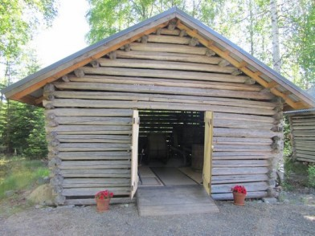
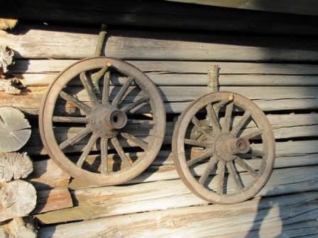
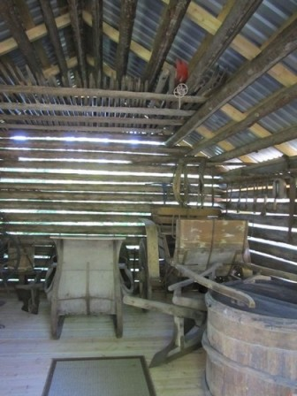
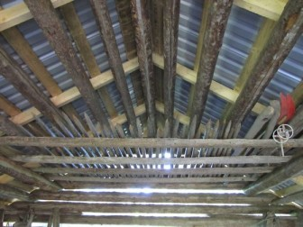
Ensiksi piti tietenkin siirrättää lato, johon nakutella katto, lattia ja ovet. Sitten alkoi todella iso urakka koota eri paikoista (riihestä, autiotalosta, navetasta, ladoista) suvun vanhoja tavaroita. Tavarat piti puhdistaa enimmästä ruosteesta, sammalista, liasta ja pölystä - samalla varoen, ettei esine millään tavalla vaurioituisi siitä, mitä se on joskus muinoin ollut. Sitten tavarat piti yrittää järjestellä ahtaaseen (?) latoon. Niinpä sahasin moottorisahalla muutaman vanhan hirren pitkittäissuunnassa halki ja tein ylöskin lisätilaa, jonne saattoi laittaa suksia, orsia, aisoja ja heinäseipäitä.
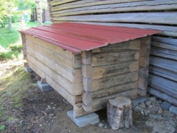
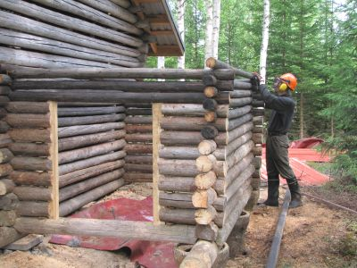

Rakensin vielä lisätilaa. Löytämästäni jyvälaarista syntyi erillisen puuladon taakse lisätilaa polttopuille. Vanhan riihen orsista (mustunut yläosa) ja muutamista appiukon säilömistä hirsistä piti sitten rakentaa vielä lisätilaa museoladon taakse. Nyt pikkuisessa päätyladossa on ovikin ja se on täynnä heinäseipäitä ja erilaisia auroja. Pitihän sitä päästä edes kerran elämässään tekemään lato alusta loppuun...
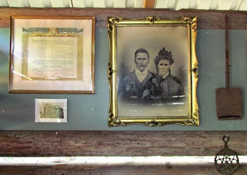
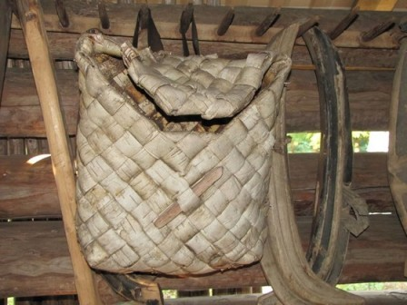
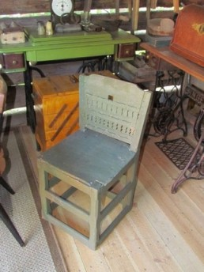
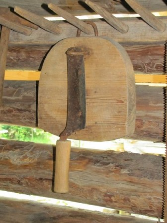
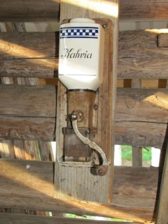
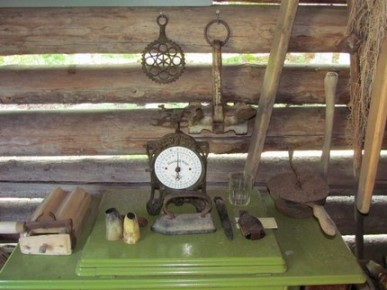
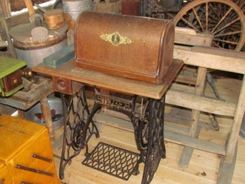
Kun museolatoon astuu, vasemmalla seinällä ottavat tilan entiset isäntä ja emäntä tulijan vastaan. Tuohikontin voit heittää naulaan ja istahtaa ominkäsin tehdylle tuolille. Isäntä on jo aikoja sitten leikellyt kessua ja kuivattanut sitä, nyt muuta kuin tupakaksi. Modernilla kahvimyllyllä on pavut helppo murskata, rännäreillä eli kahvinpaahtimilla emäntä keittää sinulle pikaisesti kahvitkin. Ensimmäisen kuvan vieressä roikkuu yksi rännäri ja vanhan puntarin (vaa'an) vieressä oikealla singerin päällä on toinen. Ja jos tuntuu siltä, että terveys ei ole kunnossa, voi emäntä viedä sinut saunaan ja laittaa kuppaussarvet selkään. Puntarikuvassa vanhahkon morapuukon vieressä näkyy myöskin pikitervaa, jolla entisajan ihmiset karkoittivat hyttysiä metsään lähtiessään. Niin...ja singereillähän sitä minunkin lapsuudessani vaatteita äiti korjaili, kun uusia ei ollut vara ostaa juuri koskaan.
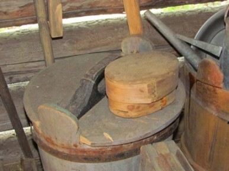
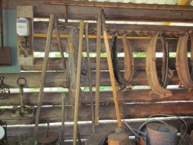
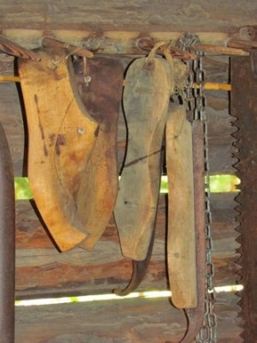
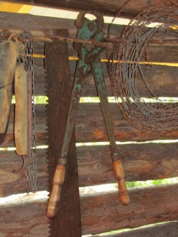
Kuvassa oleva tuohesta tehty aski oli nähtävästi voirasia. Seinällä näkyy viljan puinnissa riihessä käytettyjä varstoja. Kengätkin isossa talossa saatettiin tehdä itse tai sitten suutari oli jättänyt sopivat lestit tilalle seuraavaa keikkaa varten. Naulakossa, jotka ovat alunperin leipien kuivaamiseen tarkoitetut, riippuu myös entisajan luistimet, jotka sidottiin tavallisiin kenkiin kiinni. Riippumassa myös justeeri eli kahden vedettävä saha sekä lehmän kynnenleikkurit. Totta kai myös piikkilankarullia säästin latoon, sillä pian nekin ovat mennyttä historiaa.
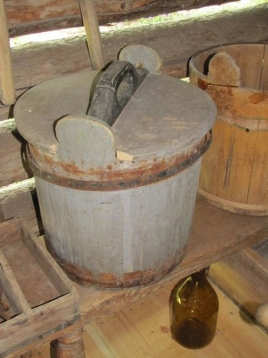
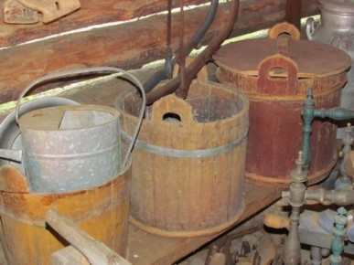
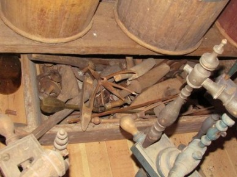
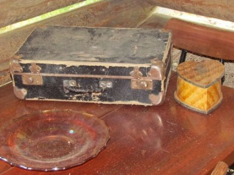
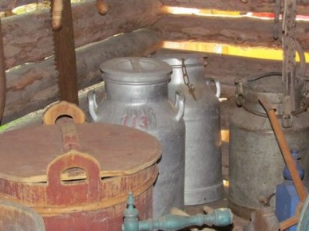
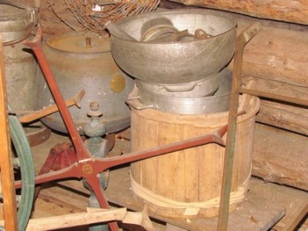
Vanhoja saaveja, jotka on taidollisesti puusta tehtyjä oli niin paljon, etten voinut kaikkia museoon edes sijoittaa. Näkyvissä on myös muutakin ns. roinaa, jota olen laittanut mm. kolmannen kuvan taikinakaukaloon. Vanha salkku on 40-luvulta. Korvojen ja saavien lisäksi olen tietysti tallettanut maitotonkkia ja separaattorin, jota en jaksanut kasata kokonaisuudeksi. Ensimmäisessä kuvassa näkyy saavin alla myös vanha tosimiehenkokoinen olut- eli mallasjuomapullo.
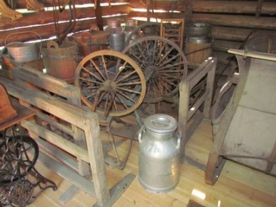
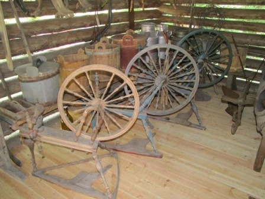
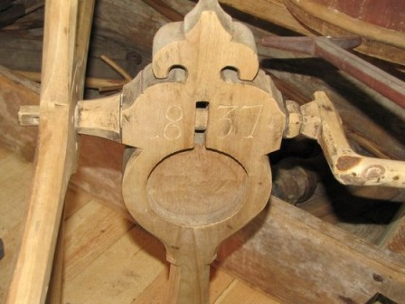
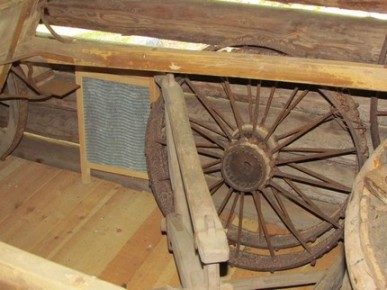
Entisaikaan vaatteetkin tehtiin itse. Siksi jokainen tyttö ja nainen osasi jo pienestä pitäen perustyöskentelyn. Kuvissa näkyy pellavanloukuttimia, rukkeja, karsta (ei taida näkyä kuvissa), vyyhdinpuita, joista vanhimmassa vuosiluku 1837. Muutenkin kaikki tavarat on puumerkeillä merkittyjä, mikä oli tuohon aikaan tapana. Harmillista oli se, että en saanut kangaspuita kasattuina mahtumaan museoon. Kahdet vanhat kangaspuut olisi ollut ja molemmat nähtävästi tuolta vuosisadan (1900-luvun) vaihteesta. No, tallessa nekin ovat. Viimeisessä kuvassa näkyy myös ihan 60-luvun pyykkilauta (vanhempi oli ruostunut niin, etten viitsinyt sitä latoon tuoda).
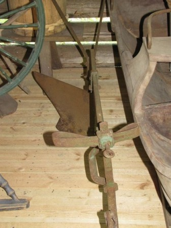
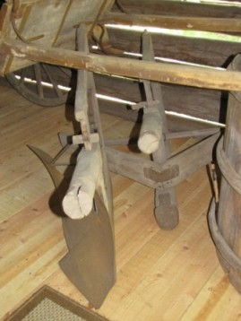
Erilaisia kyntöauroja museossa on kaikkiaan kuusi, joista kuvissa näkyy täysrautainen sekä sitten enemmän puuosia sisältäviä. Tarkkaan en tiedä, mihin mitäkin niistä on käytetty. Kolme isompaa auraa olen sijoittanut tekemääni "pikkulatoon", jossa on myös satoja heinäseipäitä.
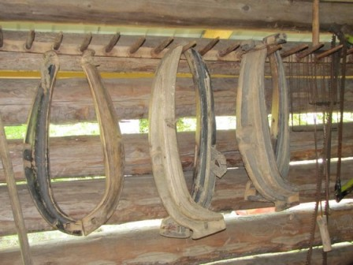
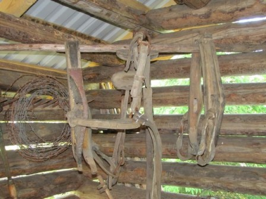
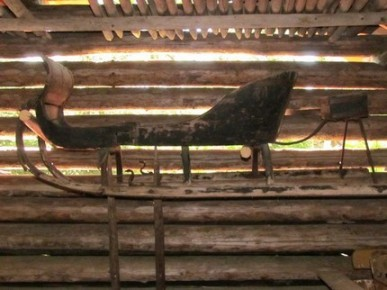
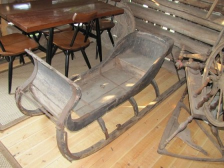
Hevoset kuuluivat oleellisena osana entisajan kulttuuriin. Nykyisin hevoset ovat lähinnä heppatyttöjen käytössä, kun entisaikaan suomenhevonen oli joka talon työjuhta. Itsekin muistan, kuinka lapsena isän kanssa haimme tukkeja metsästä Tähti-nimisellä hevosellamme. Kuvissa näkyy hevosen valjaita ja länkiä. Lisäksi seinälle on nostettu varsojen koulutusreki,joka viimeisessä kuvassa näkyy lattialla. Reki on kooltaan erittäin pieni.
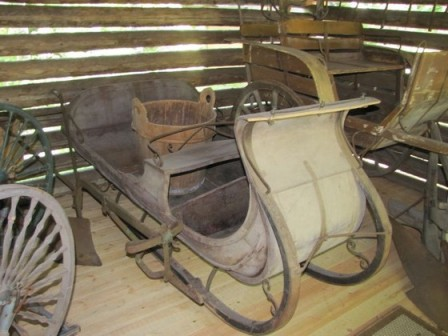
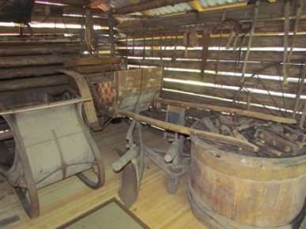
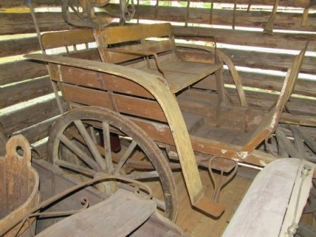
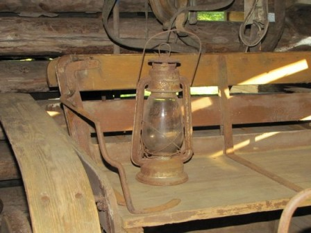
Joulukirkkoon mentiin tietysti kirkkoreellä. Kuvissa näkyy myös suurtilallisen kiesit. Kieseihin mahtui neljä ihmistä. Etuistuin kääntyi, jotta taakse pääsi myös istumaan. Kiesien penkit oli nahalla päällystetyt ja oljilla täytetyt, mutta ikävä kyllä oravat olivat rikkoneet nahat ja pesineet olkien seassa niin, että jouduin repimään nahkaistuimet kokonaan pois. Olin "mies hevosena", kuten vanhassa lännen elokuvassa konsanaan, kun siirsin kiesit museolle itse niitä vetäen. Pyörät liikkuivat todella liukkaasti, vaikka kiesejä ei ollut käytetty moniin kymmeniin vuosiin. Kiesien kyytiin nostettu öljylamppu oli kotioloissa paljon turvallisempi kuin sitä ennen käytetyt päreet ja kynttilät.
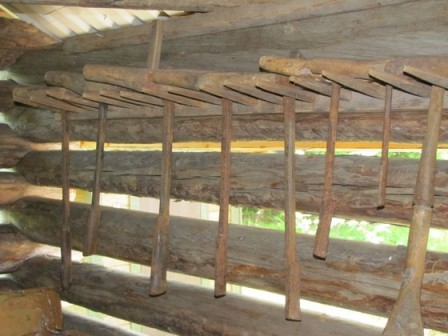
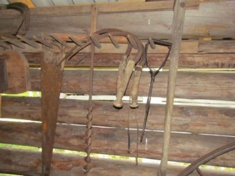
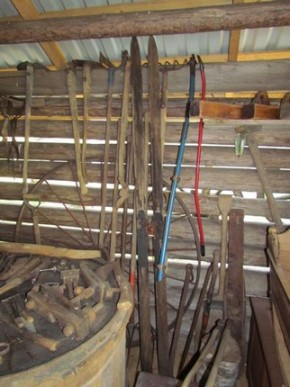
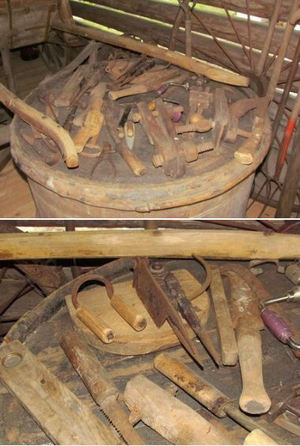
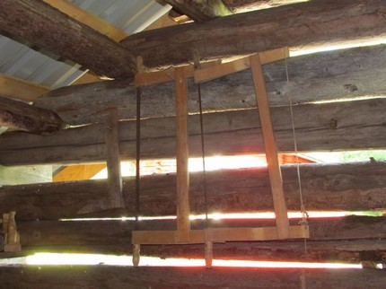
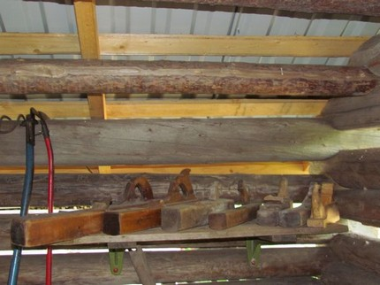
Entisajan tiloilla tehtiin itse kaikki työkalut. Kuvassa näkyy hyvin, miten erilaiseen poraukseen, taltoiksi tai mihin tahansa muuhun tarkoitukseen, sepän taidot omaava isäntä takoi tarvittavan työkalun. Kaikissa näissä on suvun puumerkki. On puukahvaista sahaa, kuokkia, sirppejä, viikatteen teriä, viikatteita, kirveitä, puusta tehty lapio. Tietenkin olen mukaan kelpuuttanut uudemmatkin viikatteet. Lisäksi suuren ruokatynnyrin päällä on esineitä moneen käyttöön: puinen vatupassi, kuorintapuu, pantapuukko, käsisaha, vesuri, keritsimiä (ei näy kuvassa), puinen harppi, puristimia jne. Lisäksi löytyy erilaisia sahoja, joista kuvassa puisia pokasahoja sekä eri kokoisia ja näköisiä höyliä.
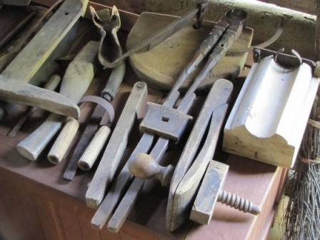
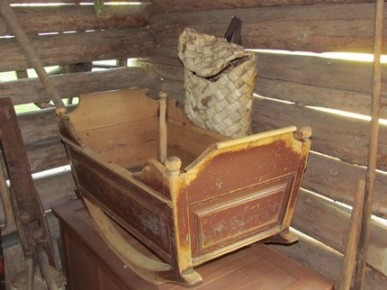
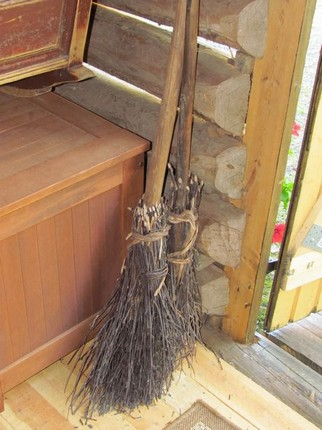
Varmasti monissa taloissa entisaikaan keitettiin pontikkaakin, mutta niistä ei tältä tilalta ole muistoja jäänyt. Sen sijaan lähes jokaisessa talossa viljeltiin tupakkaa ja kuvissa näkyykin muutamia kessun leikkureita. Lapsen kehto on todella vanha, mutta niin ovat varmasti varsiluudatkin, joilla koti sitten siistiksi saatiin.
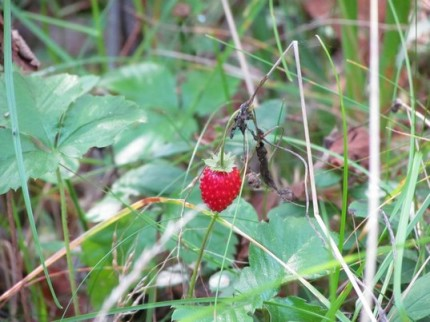
 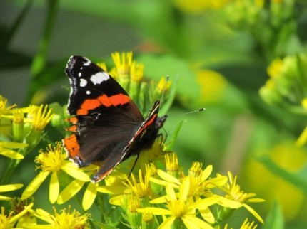
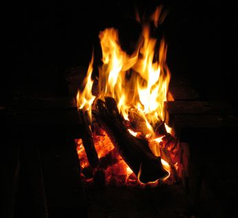
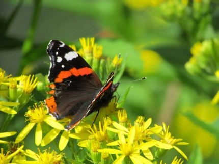
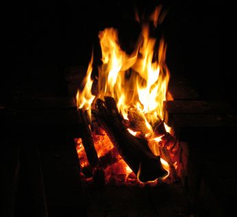
Tämän päivän ihminen elää tietokoneinensa ja autoinensa, muotikenkineen ja hiuslakkoineen mukamas onnellista aikaa. Joskus kuitenkin tuntuu, että entisajan ihmiset omissa köyhissä ja arkisissa kotiaskareissaan olivat sittenkin onnellisempia keskellä luontoa ja ei vain keskellä sitä, vaan osana sitä. Kuvissa näkyy pihapiirin kauneutta: metsämansikka, joita lapsena pujoteltiin timoteihin ja juostiin kotiin äidille näyttämään. Sieniä ja perhosia, jotka kaikki omalla tavallaan tuovat kauneutta ihmisen elämään, jos vain nykykiireiltään malttaisi hetkeksi pysähtyä katsomaan ja kuuntelemaan - vaikka sitten nuotion loimua ja rätinää.
TAKAISIN SIVUN ALKUUN
|